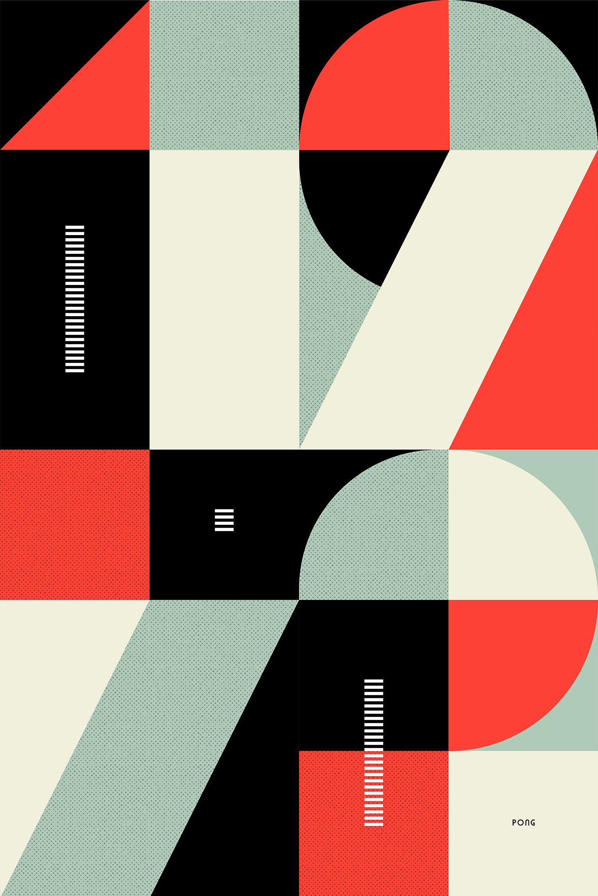

In typography, color is a term with two meanings.
First, typographers will sometimes speak of a font as creating a certain color on the page—even when it’s black. Used this way, the word encapsulates a set of hard-to-quantify characteristics like darkness, contrast, rhythm, and texture.
The second meaning is the usual one—color as the opposite of black & white. This was once an irrelevant topic, as most of us had to be satisfied with monochrome laser printers. These days, color printers are ubiquitous and more writing is delivered on screen. So color has become a practical consideration.
- On a page of text, nothing draws the eye more powerfully than a contrast between light and dark colors. This is why a bold font creates more emphasis than an italic font. (See also bold or italic.)
- The perceived intensity of colored type depends not just on the color, but also the size and weight of the font. So a thin or small font can carry a more intense color than a heavy or large font.
- I’m not saying it can never be done well, but when someone puts colored type on a colored background, I usually wish they hadn’t.
IN PRINT
body text in printed documents (e.g., résumés, research papers, letters) must always be set in black type. No exceptions.
At a typical body-text point size, color isn’t effective as a form of emphasis. Small letterforms don’t cover much surface area on the page, so colored text isn’t noticed unless it’s loud.
Professionally printed documents (e.g., letterhead, business cards) can include text set in color, but use it judiciously. Multiple shades of one color are usually better than multiple contrasting colors.
ON WEBSITES
Consider making your text dark gray rather than black. Unlike a piece of paper—which reflects ambient light—a computer screen projects its own light and tends to have more severe contrast. Therefore, on screen, dark-gray text can be more comfortable to read than black text. That’s why many digital-book readers let you reduce the screen brightness or change the text color.
IN PDFS
PDFs are read on both screen and paper, so which set of rules you follow depends on how you expect the PDF to be used. If there’s a reasonable chance the PDF will be printed, don’t bother with dark-gray body text—it’ll look gritty and strange when printed.
